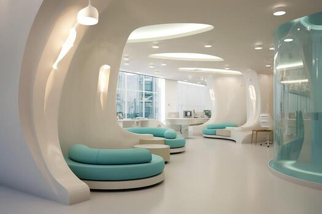
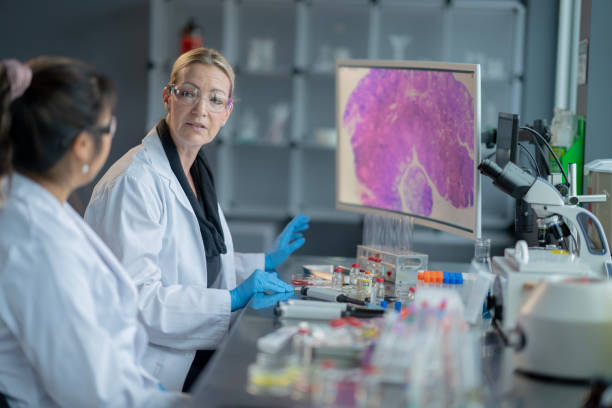

About Darmon Service UZ
We combine clinic care with a home visit laboratory.
Our goal is simple: make diagnostics and doctor consultations easy, fast, and comfortable for every family.


A clinic that respects your time
We know how busy life can be. That is why we built a service where you can get help in the clinic or at home — without stress.
For lab tests, our mobile team comes to your address, collects the sample carefully, and you receive results online (PDF) or in person.
We also keep communication simple: clear instructions, calm explanations, and quick support.
What patients notice
Clean environment and modern equipment
Polite staff and careful procedures
Home visit lab for kids & seniors
Online results and easy appointment booking